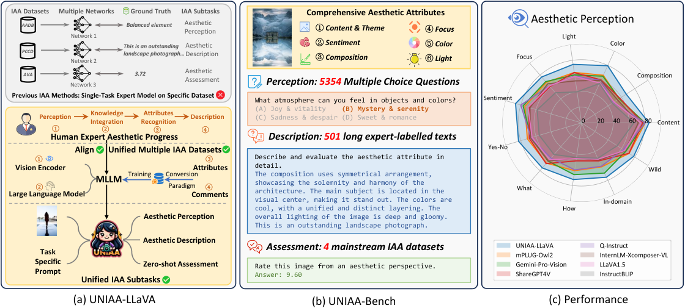
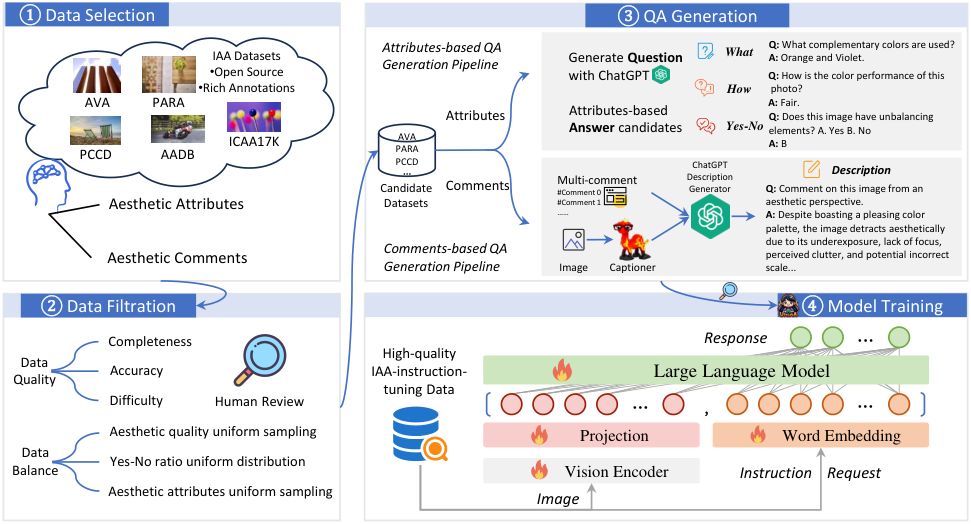
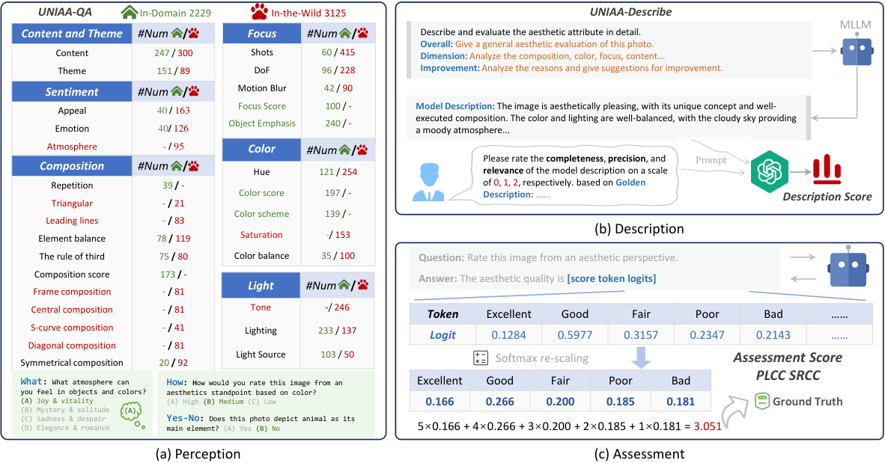
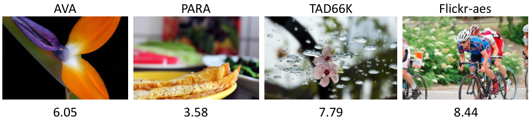
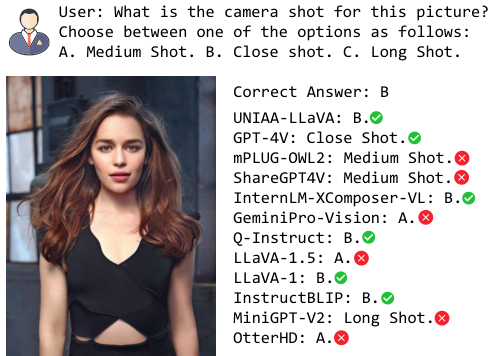
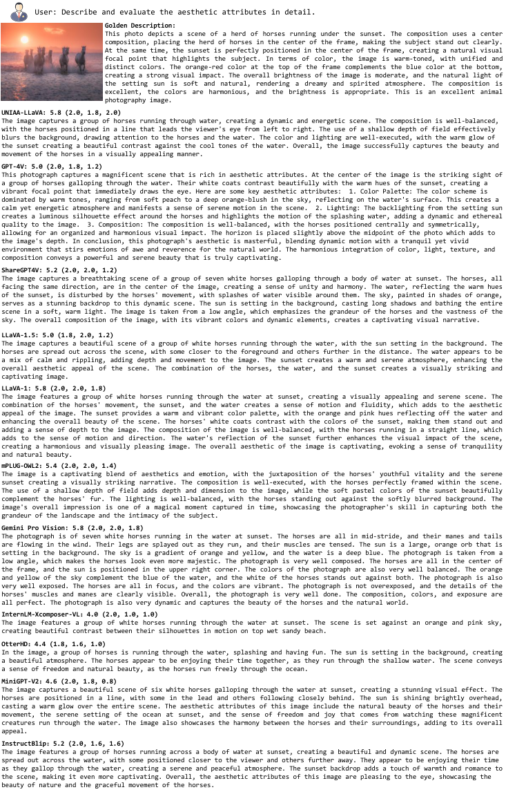
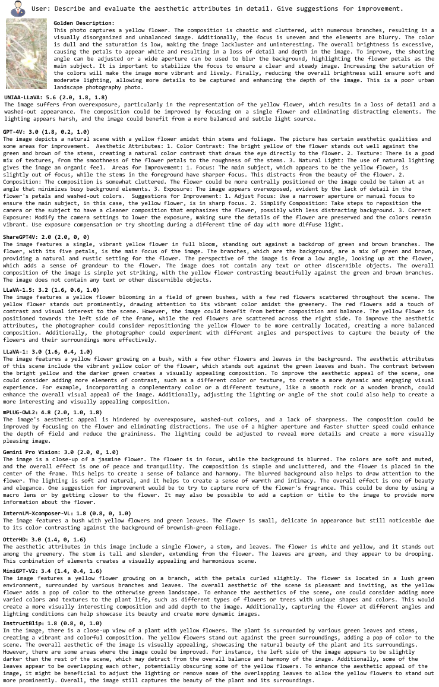

As an alternative to expensive expert evaluation, Image Aesthetic Assessment (IAA) stands out as a crucial task in computer vision. However, traditional IAA methods are typically constrained to a single dataset or task, restricting the universality and broader application. In this work, to better align with human aesthetics, we propose a Unified Multi-modal Image Aesthetic Assessment (UNIAA) framework, including a Multi-modal Large Language Model (MLLM) named UNIAA-LLaVA and a comprehensive benchmark named UNIAA-Bench. We choose MLLM with both visual perception and language ability for IAA and establish a low-cost paradigm for transforming the existing datasets into unified and high-quality visual instruction tuning data, from which the UNIAA-LLaVA is trained. To further evaluate the IAA capability of MLLMs, we construct UNIAA-Bench, which consists of three aesthetic levels: Perception, Description, and Assessment. Extensive experiments validate the effectiveness and rationality of UNIAA. UNIAA-LLaVA achieves competitive performance on all levels of UNIAA-Bench, compared with existing MLLMs. Specifically, our model performs better than GPT-4V in aesthetic perception and even approaches the junior-level human. We find MLLMs have great potential in IAA, yet there remains plenty of room for further improvement. The UNIAA-LLaVA and UNIAA-Bench will be released.
Image Aesthetics Assessment (IAA) in computer vision involves the evaluation of the photography techniques and artistic approaches of images (Deng et al., 2017), to categorize them into various aesthetic levels (Hou et al., 2022; Niu et al., 2022). Serving as an alternative to costly expert aesthetic evaluation, IAA has a wide range of applications in image retrieval (Liu et al., 2021), album curation (Guo et al., 2017), smart photography (Rawat and Kankanhalli, 2016), and image editing(Chai et al., 2020), which is still a challenging task (Yang et al., 2019). Various datasets and models for IAA have been proposed, achieving significant progress. IAA datasets offer images with aesthetic scores (Murray et al., 2012; Kong et al., 2016; Yang et al., 2022) and other annotations of aesthetic attributes (Kong et al., 2016; He et al., 2022; Yang et al., 2022; Murray et al., 2012), as well as overall description (Jin et al., 2019). Many studies have achieved promising results by employing data-driven approaches to directly predict the aesthetic mean opinion scores (MOS) (He et al., 2022; Xiong et al., 2023; He et al., 2023), including convolutional neural networks (Talebi and Milanfar, 2018; Chen et al., 2020; He et al., 2022; Hosu et al., 2019), and transformers (Ke et al., 2021; Xia et al., 2022; He et al., 2023). There are also works that use aesthetic attributes and image content to assist in predicting scores (Kong et al., 2016; Yang et al., 2022; He et al., 2023). VILA (Ke et al., 2023) and RPCD (Vera Nieto et al., 2022) have demonstrated the potential of learning image aesthetics from photo comments.

Psychological studies reveal that the human experience of aesthetics involves a series of information processing stages, encompassing perception, integration of implicit memory, explicit classification of content and style, and evaluation (Leder et al., 2004; Chatterjee, 2004). However, current IAA methods are not well-aligned with the human aesthetic process. Regarding IAA datasets, most of them only cover a partial level of the human aesthetic evaluation process and lack standardization in their formats, which makes it difficult to train them under a uniform architecture. For example, AVA contains both the MOS of images as well as rich comments, photography style labels, and content tags. Aesthetic annotations are represented in different formats consisting of numeric, language, and category/attribute labels. Regarding IAA methods, they only utilize a part of aesthetic information and are predominantly focused on a single aesthetic task. Scoring models struggle to recognize the aesthetic attributes of images, while aesthetic description models can not score photos.
We need a unified IAA framework that can align well with human aesthetic processes, integrate different sources and formats of aesthetic data, and achieve good results in multiple aesthetic subtasks. Specifically, we argue that in the process of IAA-model learning, it is necessary to align with the process of human aesthetics, rather than simply relying on implicit mapping through learning MOS or partial attributes (Vera Nieto et al., 2022; Ke et al., 2023). The model necessitates a visual understanding and harbors inherent reservoirs of aesthetic knowledge. It needs to learn explicit categorization of the aesthetic attributes and integrate the aesthetic information to provide detailed descriptions and overall scores. MLLM (OpenAI, 2023; Alayrac et al., 2022; Li et al., 2022; Driess et al., 2023; Zhu et al., 2023; Liu et al., 2023; Huang et al., 2023; Li et al., 2023) is primarily composed of a vision encoder and an LLM, which is capable of visual perception and has substantial knowledge capacity (Schaeffer et al., 2023), making it a natural fit for human-aligned and unified IAA.
We propose UNIAA, as shown in Figure 1, which to the best of our knowledge, introduces MLLM to IAA for the first time, including an IAA-MLLM baseline and a comprehensive aesthetic benchmark. The baseline is capable of unifying aesthetic perception, description, and assessment tasks, while the benchmark comprehensively evaluates the aesthetic capabilities of MLLM from these three aspects, which strives to align the aesthetic evaluation process with that of human experts. For the baseline model, we adopt the well-established LLaVA (Liu et al., 2023a; Liu et al., 2023b) architecture and further finetune it with aesthetic visual instruction tuning data to obtain our UNIAA-LLaVA (Figure 1(a)). Based on the integration of visually aesthetic perception by the vision encoder and memory of aesthetic knowledge through LLM, UNIAA-LLaVA demonstrates a strong ability to learn and align with human aesthetics. However, due to the subjective and complex nature of aesthetics (Yang et al., 2022), annotating a large amount of aesthetic visual instruction tuning data is very expensive. Therefore, we establish a low-cost IAA Dataset Conversion Paradigm (IDCP), aiming to convert aesthetic annotations such as aesthetic attributes and comments from off-the-shelf IAA datasets into a MLLM visual-instruction-tuning format.
To evaluate the aesthetic ability of the proposed UNIAA-LLaVA and other existing MLLMs, we construct a comprehensive and professional UNIAA-Bench (Figure 1(b)). To ensure diversity, we select test-set images from the IAA datasets as the in-domain split and collect images from the internet as the in-the-wild split. The in-the-wild split does not overlap with the IAA datasets that are used to train the UNIAA-LLaVA, which can further prove its generalization capability on various aesthetic tasks. In accordance with the image-quality Q-bench (Wu et al., 2023) and human aesthetic (Leder et al., 2004), we evaluate the aesthetic ability of MLLMs from three aspects, including Perception, Description, and Assessment. For Aesthetic Perception, we construct the UNIAA-QA dataset, which covers six general aesthetic attributes (Yang et al., 2022; Li et al., 2023) through its questions: content and theme, composition, color, light, focus and sentiments. For Aesthetic Description, we construct the UNIAA-Describe dataset to assess the ability of MLLM on detailed and professional aesthetic comments and suggestions. For Aesthetic Assessment, we test the zero-shot scoring ability of MLLMs through output token logits. Our contributions can be summed up into four points:
We establish an IAA framework that includes an IAA-Baseline and a comprehensive IAA-Bench, namely UNIAA. Both the learning process and evaluation process of UNIAA align with the visual aesthetic process of human experts.
We develop an IAA Datasets Conversion Paradigm (IDCP) to convert existing aesthetic datasets into a format suitable for MLLMs fine-tuning. Using converted data, we obtain the UNIAA-LLaVA, which unifies IAA subtasks with language.
We are constructing a comprehensive aesthetic evaluation benchmark called UNIAA-Bench, which systematically evaluates the aesthetic abilities of MLLMs from three overall dimensions: Aesthetic Perception, Aesthetic Description, and Aesthetic Assessment.
We demonstrate the effectiveness of UNIAA-LLaVA and IDCP, the authority of UNIAA-Bench, and the feasibility of MLLM in accomplishing aesthetic tasks through experiments.
Image Aesthetics Assessment has three main tasks: direct scoring of the aesthetic quality of images (Murray et al., 2012; Karayev et al., 2014; Tang et al., 2013; Ren et al., 2017; Lee et al., 2018; Yang et al., 2022; He et al., 2022), recognition of aesthetic attributes (Celona et al., 2022; Jin et al., 2019), and aesthetic description (Zhou et al., 2016; Wang et al., 2019). A multitude of approaches, encompassing network architecture design (Tang et al., 2013; He et al., 2023), loss function design (Kong et al., 2016; Talebi and Milanfar, 2018), utilization of the CLIP (Radford et al., 2021) pre-training model (Ke et al., 2023; Xiong et al., 2023), and more, have been proposed, demonstrating strong performance on their respective tasks and datasets. However, the majority of IAA models focus on accomplishing one or two subtasks. There is a lack of a comprehensive and versatile IAA model for holistic image aesthetic evaluation.
Numerous datasets emerge to support the advancement of IAA. Murray et al. (Murray et al., 2012) pioneered the AVA dataset, which has gained significant popularity. Kong et al. (Kong et al., 2016) introduced the Aesthetics and Attributes Database (AADB), encompassing subjective aesthetic scores and attributes Addressing the need for generating captions based on photo aesthetics, Yu et al. (Chang et al., 2017) developed the Photo Critique Captioning Dataset (PCCD). TAD66K (He et al., 2022) is an extensive dataset encompassing 47 subjects. The Personalized Image Aesthetics Database with Rich Attributes (PARA) (Yang et al., 2022) includes nine image-oriented objective attributes and four human-oriented subjective attributes. ICAA17K (He et al., 2023) comprises 17K images capturing 30 popular color combinations, providing a valuable resource for color-oriented analysis. While these datasets were previously handled separately, the shared and correlated nature of aesthetic knowledge provides the potential for integrating learning.
However, the current IAA methods still have a significant gap from a general-purpose image aesthetic evaluation, mainly due to the following two issues. Firstly, relying on human-labeled aesthetic ratings, i.e. MOS, for directly supervised learning may be sub-optimal, as it lacks of interpretability (Kang et al., 2020) and may lead to overfitting to label noise. Moreover, current methods are still constrained by the need to train different models for individual datasets. Tasks such as aesthetic perception, aesthetic description, and aesthetic assessment also require training in separate models (Yang et al., 2019). Current IAA methods lack comprehensive aesthetic information learning and universal applicability across different datasets and tasks. These limitations hinder the practical applicability and universality of IAA. Therefore, IAA urgently requires a unified and versatile approach to enhance its practical value.
Large language models (LLMs) such as GPT-4 (OpenAI, 2023), T5 (Chung et al., 2022), and LLaMA (Touvron et al., 2023), have demonstrated a remarkable language proficiency in general knowledge. By incorporating vision encoders (Radford et al., 2021) and additional adaptive modules into LLMs, Multi-modal Large Language Models (MLLMs) (Li et al., 2023; Gao et al., 2023; Liu et al., 2023; Dai et al., 2023; Zhang et al., 2023) have driven significant progress in tackling various multi-modal tasks concerning high-level vision, such as image captioning (Chen et al., 2015; Agrawal et al., 2019; Young et al., 2014), visual question answering (VQA) (Antol et al., 2015; Marino et al., 2019; Schwenk et al., 2022), and other language-related abilities (Liu et al., 2023; Fu et al., 2023; Li et al., 2023).
Although MLLMs (OpenAI, 2023; Alayrac et al., 2022; Li et al., 2022; Driess et al., 2023; Zhu et al., 2023; Liu et al., 2023; Huang et al., 2023; Li et al., 2023; Lin et al., 2023; Lin et al., 2024; Zhu et al., 2023; Jin et al., 2023) play a crucial role in advancing vision-language learning, they exhibit subpar performance in specific tasks and vertical applications (Li et al., 2023; Fu et al., 2023; Wu et al., 2023; Li et al., 2023). The emergence of fine-tuning with task-specific instructional knowledge has led to a surge of MLLMs tailored for specific tasks, such as Q-instruct (Wu et al., 2023), LLaVA-Med (Li et al., 2023), and Drive-GPT4 (Xu et al., 2023).
Why choose MLLM for IAA? There are two reasons for adapting MLLMs to IAA tasks. (1) MLLMs are capable of aesthetic visual perception and knowledge integration. (2) The fine-tuning data and output are both mediated by language, which facilitates the natural integration of aesthetic visual instruction tuning and enables seamless completion of IAA subtasks. These training data and subtasks are highly associated with the human aesthetic process (Leder et al., 2004). Our goal is to create a unified aesthetic foundational model that can integrate various aesthetic information and establish general capabilities across various tasks while robustly responding to open-ended human queries.

In the following two sections, we present the details of our proposed aesthetic evaluation framework, UNIAA, which aims to unify the aesthetic information perception, description, and assessment tasks. As a starting point, we integrate LLaVA, a versatile multimodal conversational model (Liu et al., 2023a), as the initial model. Subsequently, we consistently refine and fine-tune the model to specifically cater to the demands of the aesthetic domain. There is a shortage of multi-modal image aesthetic datasets for training an instruction-following assistant. To bridge this gap, we construct the initial dataset of its kind, derived from extensively available IAA datasets. As a fundamental part of constructing the instruction fine-tuning dataset, we first introduce a low-cost paradigm for converting the instruction fine-tuning data. Unlike the need for manual annotation collection, we utilize the existing IAA dataset and transform it into corresponding suitable IAA instruction fine-tuning data based on the aesthetic dimensions emphasized during its labeling and annotation settings. Then, further using the transformed data, we obtain the first MLLM of IAA via instruction fine-tuning on the LLaVA.
Inspired by the construction of classic datasets of instruction tuning (Fu et al., 2023; Liu et al., 2023; Wu et al., 2023; Chen et al., 2023), our IAA Data Conversion Paradigm (IDCP) consists of three steps: data selection, data filtering, and question-answer generation, as illustrated in Figure 2. The converted data will be used for training UNIAA-LLaVA. We hope that our IAA data transformation pipeline can provide inspiration and guidance for building new IAA instruction tuning datasets as well as other domain-specific task datasets.
To maximize the diversity and comprehensiveness of UNIAA, we first select five open-source mainstream IAA datasets, AVA, AADB, ICAA17K, PARA, and PCCD, detailed in Appendix A.1. These datasets have aesthetic annotations across different dimensions. We select specific aesthetic information. The annotation content of existing IAA datasets can be primarily categorized into the following three types, aesthetic attributes, aesthetic comments, and aesthetic scores. We choose the first two categories.
Aesthetic Attributes are annotated information about photographs on specific objective aesthetic dimensions. Its exceptional suitability for conversion into visual question answering empowers the model with the ability to recognize and evaluate the aesthetic attributes of images using concise words. The data sources for aesthetic attributes include the photography styles annotated in AVA, the influence of aesthetic attributes on overall image aesthetics in AADB, the color schemes in the ICAA17K dataset, and the quality classification of aesthetic attributes in PARA.
Aesthetic Comments are evaluations and descriptions of aesthetic features, aiming to explore and convey the aesthetic ambiance and emotional experiences that images invoke. Descriptions of aesthetic comments can be made from various perspectives, such as color, composition, form of expression, meaning, emotions, etc. These comments can help models better understand and appreciate images. The data sources for aesthetic comments include the overall comment on a photo in AVA and the dimensional comment in PCCD including the use of camera, photo subject, depth of field, focus, color brightness, composition, and overall impression.
Why not use Aesthetic Scores? Aesthetic Scores are highly subjective (Yang et al., 2022). Due to the differences in scoring rules and aesthetic differences among annotation experts, it is difficult to convert scores from different IAA datasets into unified evaluation scores. For example, a photo with a high score in one dataset may not have better aesthetic quality than a photo with a medium score in another dataset. Instead, we use attributes and descriptions to enable the UNIAA-LLaVA to have good zero-shot scoring capability, detailed in Section 5.3. As a supplementary experiment, based on the vision encoder of UNIAA-LLaVA, we further conduct supervised training on specific datasets and achieve the SOTA performance, demonstrating the generalization of our learning framework.
Data Quality. We ensure the quality of the training data from the source by conducting manual checks on the selected data for both completeness and accuracy. We filter out empty or incomplete annotations and remove incorrectly labeled aesthetic dimensions. We check the difficulty of aesthetic information by removing data that is too simple or too difficult. We discard the "Tags" of AVA, which contain simple categories like "Water" and "Street" due to their low relevance to aesthetics. For some attributes in AADB, such as whether colors are harmonious, we filter out samples that are difficult for experts to judge.
Data Balance. To introduce diverse visual aesthetic appearances, we uniformly sampled images from each aesthetic quality range. We balance the number of aesthetic attributes as well as the number of options within each attribute. For yes or no questions, we ensure the balance between "yes" and "no" responses.
Attributes-based Pipeline. According to aesthetic attribute annotation, aesthetic experts first manually write down several elemental questions, and then let ChatGPT expand them into various forms while ensuring the same meaning, detailed in Appendix A.2. To imitate diverse query formats from human beings (Wu et al., 2023), we organize three question types, Yes-or-No, What, and How, which correspond to different types of annotations. For binary attribute questions, such as whether elements in a photo are balanced, "yes/no" is used. Specifically, for questions about the types of attributes, such as the primary color usage of a picture, "what" is used. For quality classification questions, such as the quality of focus, "how" is used.

Comments-based Pipeline. The quality and style of aesthetic comments in different datasets can vary. For instance, the comments in the AVA (Murray et al., 2012) are more colloquial, whereas the PCCD (Chang et al., 2017) contains professional comments from experienced photographers. It is necessary to use ChatGPT (OpenAI, 2023a; OpenAI, 2023b) to clean the raw data, detailed in Appendix A.3. The transformation process of aesthetic comments mainly consists of two steps: comments rewriting and question matching. We utilize GPT and LLaVA to assist in rewriting the comments. LLaVA offers the image content and details. GPT is prompted to filter out the drawbacks of aesthetic comments from different datasets, such as the colloquial content in AVA that is not relevant to aesthetics and the excessively long comments in PCCD.
Regarding question matching, we use the length and dimension of cleaned content as key points. We ask the MLLM questions to evaluate the image’s overall aesthetic and specific dimensions, such as composition, lighting, and impression. If the comments include explanations for aesthetic patterns and suggestions for aesthetic improvements, the matching questions will also include phrases such as "analyze the causes of this characteristic" and "please provide some aesthetic improvement suggestions." If the comments exceed a certain length, such as 100 words, the corresponding question would be to provide a “detailed” evaluation of the image.
As a general MLLM aesthetic data conversion paradigm, IDCP has the following three advantages. Firstly, it is low cost. IDCP integrates publicly available datasets, without the need for additional manpower to collect and annotate data. Secondly, it has uniformity. Through conversion, aesthetic comments and aesthetic attributes can be trained in a unified format, enhancing the overall aesthetic capabilities of the model. Thirdly, it has scalability. In addition to the five datasets we select, it can also be used to incorporate newly emerged aesthetic datasets, and more data will further enhance the aesthetic capabilities of the model.
In this section, we discuss the training approaches used to fine-tune MLLMs with Image Aesthetic visual instructions. The training process for open-source MLLMs (Dai et al., 2023; Li et al., 2023; Zhang et al., 2023) consists of two stages. The first stage involves aligning the representation space of the visual backbone and LLM with million-scale data (Schuhmann et al., 2021; Sharma et al., 2018). The second stage includes fine-tuning the MLLM with a combination of human-labeled datasets (Yu et al., 2016; Antol et al., 2015; Chen et al., 2015; Marino et al., 2019) for visual instruction tuning. Considering the scale and computational cost of the IDCP dataset, we utilize the MLLM fine-tuned after the second stage for visual instruction tuning to perform IAA learning. IAA tasks require a finer level of visual perception. We open the parameter training of the vision encoder during training.
It is uncertain how well the UNIAA-LLaVA performs in image aesthetics. The lack of a dedicated benchmark for assessing the effectiveness of MLLMs in aesthetic evaluation presents an apparent obstacle, which may hinder the progress of advanced MLLMs capable of aesthetics. To solve this problem, we propose UNIAA-Bench, an expert benchmark designed to comprehensively evaluate the aesthetic capabilities of MLLMs. To ensure the diversity of the benchmark (Liu et al., 2023a), we select images from the internet and other datasets that have never been seen by UNIAA-LLaVA, serving as In-the-Wild resources. IAA-Bench also contains test-set images from the IAA datasets as In Domain resources, whose training sets were previously used during the training of our baseline. Inspired by human aesthetic process (Leder et al., 2004) and image-quality bench (Wu et al., 2023), we suggest a collection of integrative standards to measure the aesthetic skills of MLLMs from three perspectives: Aesthetic Perception, Aesthetic Description, and Aesthetic Assessment.
We construct the UNIAA-QA to investigate whether MLLMs can accurately respond to simple natural language queries related to aesthetic attributes, which is also an ability of human experts to recognize explicit aesthetic information (Leder et al., 2004). UNIAA-QA contains 5,354 images, as listed in Figure 3(a), including 2,229 images in the domain and 3,125 images from the wild. The aesthetic issues examined in the WILD do not exist in the training of UNIAA-LLaVA, as indicated by the item highlighted in red in Figure 3(a). For each image, there is one question related to perception, with one correct option and 1-3 false options. Drawing on recent studies on aesthetic perception (Yang et al., 2022) and the human perception process related to image aesthetics (Li et al., 2023), the UNIIAA-QA subset addresses six dimensions through its questions: Content and Theme, Composition, Color, Light, Focus and Sentiment.
Content and Theme are the first aspects that need to be understood when analyzing the aesthetics (Leder et al., 2004; Li et al., 2023). Question design includes asking about photo theme, subject type, content, and influence on aesthetics. Composition is a critical indicator in characterizing the aesthetic qualities of an image (Celona et al., 2022), which structures the visual story and enhances the aesthetic appeal. Within visual arts, the visual elements of an image are interdependent through composition (Liu et al., 2019), relying on each other to collectively showcase the aesthetic qualities of the entire image. Composition contains multiple categories, such as the rule of thirds, diagonal, symmetry, and centering. Color is considered more perceptually distinct and relevant than other aesthetic features (He et al., 2023) since the human eye can directly perceive different wavelengths of light and convert them into distinct color signals. UNIAA-Bench examines color scheme, color combination, and color harmony. Light affects aspects of the image such as brightness, contrast, and saturation, which can create a sense of visual hierarchy and depth. The perception of light includes the lighting quality, the type of luminance source, and the lighting tone. Focus highlights the important part of the image. A good focus can help the viewer better understand the story of the image and the emotions conveyed, thus improving the aesthetic quality of the image. Sentiment plays a crucial role in visual aesthetic (Feng et al., 2023; Leder et al., 2004). It encompasses emotional reactions, attractiveness, and understanding of atmosphere in aesthetic experiences.
The UNIAA-QA utilizes three question types commonly used in human queries when interacting with MLLMs (Chen et al., 2023; Wu et al., 2023): "Yes-or-No" questions requires a positive or negative response (e.g., Does this photo employ the rule of thirds in its composition?). "What" questions examine more comprehensive aesthetic perception, such as "What type of composition is used in this photo?". "How" questions are used to evaluate more details about the grade and production of aesthetic feeling in the image, such as "How does the use of symmetry composition affect photo aesthetic quality?".
| MLLM | Aesthetic Attributes | Question Types | Image Sources | Overall | Rank | ||||||||
|---|---|---|---|---|---|---|---|---|---|---|---|---|---|
| Con. The. | Comp. | Color | Light | Focus | Sent. | Yes-No | What | How | In-Domain | Wild | |||
| Random guess | 36.15% | 33.67% | 39.43% | 39.62% | 38.07% | 41.72% | 50.00% | 32.93% | 28.68% | 33.42% | 41.05% | 37.80% | |
| Junior-Level Human | 86.66% | 82.24% | 80.48% | 68.14% | 79.39% | 72.41% | 79.91% | 81.95% | 72.78% | 75.41% | 81.57% | 79.01% | |
| Seinor-Level Human | 91.23% | 88.44% | 80.68% | 89.34% | 87.18% | 90.30% | 89.54% | 90.08% | 79.91% | 79.81% | 92.80% | 87.39% | |
| UNIAA-LLaVA | 84.88% | 66.82% | 81.58% | 75.68% | 81.98% | 82.75% | 81.64% | 75.83% | 78.70% | 78.78% | 78.27% | 78.48% | 1 |
| (CS) | 85.06% | 70.14% | 73.11% | 72.10% | 73.19% | 81.54% | 78.99% | 74.82% | 67.01% | 70.56% | 77.33% | 2 | |
| mPLUG-Owl2 | 80.30% | 56.48% | 66.27% | 64.50% | 67.90% | 74.57% | 71.34% | 67.58% | 61.11% | 61.19% | 71.55% | 67.24% | 3 |
| Gemini Pro Vision (CS) | 79.80% | 56.70% | 64.96% | 61.38% | 69.10% | 76.94% | 66.60% | 64.24% | 66.19% | 69.89% | 66.60% | 66.61% | 4 |
| ShareGPT-4V | 77.38% | 57.61% | 59.76% | 64.37% | 60.82% | 69.18% | 68.90% | 68.29% | 48.67% | 52.89% | 71.33% | 63.65% | 5 |
| Q-Instruct | 80.30% | 48.03% | 59.06% | 59.82% | 62.08% | 70.91% | 66.67% | 58.99% | 60.12% | 60.39% | 62.88% | 61.84% | 6 |
| InternLM-XComposer-VL | 71.79% | 54.04% | 59.16% | 53.71% | 65.36% | 67.89% | 67.21% | 63.95% | 44.66% | 51.82% | 65.41% | 59.75% | 7 |
| LLaVA-1.5 | 75.10% | 48.87% | 55.47% | 59.43% | 62.02% | 70.26% | 65.11% | 61.63% | 45.64% | 50.52% | 64.80% | 58.85% | 8 |
| InstructBLIP | 66.11% | 46.13% | 54.76% | 39.69% | 50.36% | 58.39% | 55.70% | 53.09% | 44.25% | 49.32% | 53.59% | 51.81% | 9 |
| MiniGPT-v2 | 56.42% | 37.50% | 45.45% | 44.34% | 50.75% | 62.07% | 54.31% | 49.11% | 37.68% | 43.20% | 51.46% | 48.02% | 10 |
| OtterHD | 51.97% | 41.73% | 40.54% | 42.26% | 52.72% | 55.60% | 56.62% | 44.36% | 36.24% | 41.18% | 50.43% | 46.58% | 11 |
| LLaVA | 38.25% | 43.98% | 45.95% | 39.92% | 32.41% | 53.45% | 52.75% | 37.52% | 30.93% | 40.15% | 41.60% | 40.99% | 12 |
| Qwen-VL | 37.61% | 28.53% | 38.44% | 35.24% | 33.33% | 29.96% | 43.20% | 32.05% | 26.08% | 34.37% | 33.97% | 34.14% | 13 |
We construct the UNIAA-Describe subset to examine the aesthetic language description ability of MLLMs. UNIAA-Describe is a golden aesthetic description dataset, consisting of a single long (averaging 100 words) expert-provided description for each image. The dataset consists of 501 images, categorized into low, medium, and high aesthetic quality with 151, 150, and 200 images respectively. The description includes a concise and detailed analysis of the aesthetic attributes and photographic techniques used in the image, such as composition, color, focus, lighting, and sentiment. Improvement suggestions and overall aesthetic conclusions are summarized at the end of the description. All descriptions have been written by aesthetic experts and manually reviewed. Referring to these golden text descriptions, we can measure the quality of MLLMs output using a single-modal GPT (Wu et al., 2023), evaluated along three dimensions: Completeness, Preciseness, and Relevance. The prompt words used to generate descriptions for MLLM are as follows:
User: Describe and evaluate the aesthetic attribute in detail.
For images with medium and low aesthetic quality, we prompt MLLM to generate additional aesthetic improvement suggestions: Give suggestions for improvement. The specific GPT evaluation prompts can be found in Appendix B.6.
The third task tests the zero-shot capability of MLLMs to provide quantitative scores of the overall aesthetic of images. Recent explorations (Wu et al., 2023) have observed that LMMs exhibit similar behavior patterns to humans when instructed to score, preferring to respond defined levels, such as good and poor. Using the prompt,
User: Rate this image from an aesthetic perspective.
MLLM: The aesthetic quality is [Score Token].
MLLMs can provide log probabilities (logits) of the score token. The standard rating level texts (Series, 2012), are bad, poor, fair, good, excellent. Inspired by Q-bench(Wu et al., 2023) and Q-align(Wu et al., 2023), we employ softmax pooling on the logits of rating level words of the score token, to obtain their probabilities. Figure 3(c) gives an assessment example.
The quantified scores for the five rating-level words:
Excellent: 5, Good: 4, Fair: 3, Poor: 2, Bad: 1
The probability calculation for each rating-level word is as follows:
| (1) |
where is the rating-level word, and represents the logits of the rating word output by MLLMs. We obtain an aesthetic quantification score of the image using MLLMs by multiplying the corresponding quantified score of the five rating-level adjectives by their respective probabilities:
| (2) |
and the ground-truth scores will be used to calculate Spearman’s rank correlation coefficient (SRCC) and Pearson linear correlation coefficient (PLCC). The higher these two metrics are, the better the scoring ability of MLLMs. We select four mainstream IAA dataset sources: AVA, PARA, TAD66K, and Flick-Aes (Ren et al., 2017), of which the training set of the first two are used in the training process, while the latter two are not. They are depicted in Appendix B.3. It is worth noting that although we use the aesthetic information annotations of AVA and PARA during the training process, we do not use their MOS for training. So it is a zero-shot assessment task.
We select LLaVA-1.5-7B (Liu et al., 2023b) as the base model, which contains a ViT-L image encoder, a LLaMA-2-7B, and an MLP connector. Detailed training information is in the Appendix A.5. In UNIAA-Bench, we assess 13 variants on the 10 most current and competitive open-source MLLMs, as well as GPT-4V and Gemini-Pro-Vision. We also report the perception results of human aesthetic judgment.
We assess the aesthetic perception of MLLMs by testing their capability to provide accurate responses to uncomplicated natural language queries related to aesthetic attributes. Table 1 summarizes the outcomes. It is pleasing to note that the majority of MLLMs can significantly surpass random guessing on all aesthetic attributes. Except for Qwen-VL, it will answer "uncertain" for some of the questions about aesthetic choices. We provide its response examples in the Appendix B.5. Given that these general-purpose models did not receive much explicit training on visual aesthetic attributes, these findings demonstrate their strong potential for aesthetics. By comparing UNIAA-LLaVA with the original LLaVA-1.5, it can be found that using aesthetic fine-tuning data obtained by the IAA conversion pipeline can significantly improve the aesthetic perception ability of MLLM. There is an increase of over 10% in almost all aesthetic dimensions. It is worth noting that the accuracy of composition has been improved from less than 50% to 66.82%. In terms of question types, the largest improvement is in the "How" type of questions, which increases by 30%. The simultaneous improvement of UNIAA-LLaVA in both in-the-wild and in-domain data proves its generalization of aesthetic perception ability. This finding demonstrates that aesthetic abilities are transferable and can be well generalized to unseen images. Compared with GPT-4V, we achieve a leading performance in four out of six dimensions except for the composition and content and have an overall accuracy higher than GPT-4V (78.48% vs. 74.74%). In addition to our model, two closed-source models have a high visual aesthetic perception ability in mainstream MLLMs. There is no doubt that GPT-4V is the strongest, with Gemini Pro ranking fourth among all models and only slightly behind mPLUG-Owl2. The best in open-source MLLM is mPLUG-Owl2, with its perceptual accuracy surpassing ShareGPT-4V by 3.59%. The most challenging perceptual dimension for MLLM is Composition, with most models not exceeding 60%. This may be due to the difficulty of the composition appreciation task and the diversity of composition techniques. Compared to "what" and "yes/no" questions, MLLMs generally have low accuracy in answering "how" questions, indicating that their ability to rate aesthetics needs to be improved.
MLLMs VS. Human. Although leading other models, UNIAA-LLaVA still lags behind Junior-level Humans slightly (78.48% VS. 79.01%). Despite its prowess, there is still a way to go for UNIAA-LLaVA before it can match the overall proficiency of the Senior-level Human (with experiences on visual aesthetic tasks, 10% better than UNIAA-LLaVA). The aspect in which the largest gap between MLLMs and humans exists is composition. The comparative results with human evaluation indicate that MLLMs still have a long way to go in terms of visual aesthetics, and it is necessary to continue enhancing the visual aesthetic ability of MLLMs.
In terms of descriptive ability, as shown in Table 2, GPT-4V achieves the highest performance and UNIAA-LLaVA takes the lead in completeness and preciseness. As accurate description is the most difficult, all MLLMs have not achieved a score of 1 or higher in preciseness. Instead, They achieve good scores in completeness, with scores higher than 0.8. Overall, only the GPT-4V, UNIAA-LLaVA, and ShareGPT-4V score over 3 out of 6. All the MLLMs fail the UNIAA-Describe test (3.6/6.0). MLLMs have relatively limited and basic abilities in providing aesthetic descriptions. Detailed examples and qualitative analysis can be found in Appendix C.3.
| MLLM | Comp. | Prec. | Rele. | Overall |
|---|---|---|---|---|
| UNIAA-LLaVA | 1.581 | 0.821 | 1.046 | 3.448 |
| GPT-4V (CS) | 1.448 | 0.754 | 1.372 | 3.574 |
| ShareGPT-4V | 1.427 | 0.722 | 0.978 | 3.127 |
| LLaVA-1.5 | 1.271 | 0.709 | 0.948 | 2.928 |
| LLaVA | 1.287 | 0.673 | 0.956 | 2.916 |
| mPLUG-Owl2 | 1.305 | 0.671 | 0.932 | 2.908 |
| Gemini Pro Vision (CS) | 1.269 | 0.623 | 0.972 | 2.864 |
| OtterHD | 1.112 | 0.529 | 0.894 | 2.535 |
| InternLM-XComposer-VL | 0.996 | 0.419 | 0.914 | 2.329 |
| Q-Instruct | 1.022 | 0.327 | 0.930 | 2.279 |
| MiniGPT-v2 | 0.889 | 0.353 | 0.846 | 2.088 |
| InstructBLIP | 0.898 | 0.337 | 0.796 | 2.031 |
| Model | AVA | PARA | TAD66K | Flickr-Aes |
|---|---|---|---|---|
| Seen | Seen | Unseen | Unseen | |
| UNIAA-LLaVA | 0.704/0.713 | 0.895/0.864 | 0.425/0.411 | 0.751/0.724 |
| Aes-CLIP | 0.637/0.647 | - | - | - |
| VILA | 0.664/0.658 | 0.635/0.657 | 0.372/0.350 | 0.602/0.577 |
| Q-Instruct | 0.330/0.313 | 0.785/0.746 | 0.160/0.137 | 0.585/0.560 |
| ShareGPT-4V | 0.321/0.327 | 0.571/0.625 | 0.186/0.194 | 0.554/0.565 |
| mPLUG-Owl2 | 0.328/0.353 | 0.614/0.628 | 0.198/0.215 | 0.484/0.509 |
| LLaVA-1.5 | 0.281/0.286 | 0.477/0.558 | 0.158/0.156 | 0.456/0.496 |
| LLaVA | 0.257/0.267 | 0.422/0.521 | 0.145/0.153 | 0.408/0.456 |
As depicted in 4.3, we use the score token to predict aesthetic scores, and compute the PLCC/SRCC concerning ground truth. The results are listed in Table 3. UNIAA-LLaVA leads zero-shot score performance on all four mainstream IAA datasets, even though it has not been trained on TAD66K and Flick-AES. It’s worth noting that we do not use MOS values during the training. The result indicates that we can fine-tune MLLMs effectively on Aesthetic Assessment by utilizing aesthetic knowledge transformed from IDCP. Additionally, we obtain the state-of-the-art (SOTA) performance on AVA and TAD66K by conducting supervised training using the vision encoder of UNIAA-LLaVA, as shown in Appendix C.1. We achieve a PLCC of 0.838 on AVA and 0.553 on TAD66K with our vision encoder and some additional linear layers.
| AA | AC | Perception | Desc. | TAD66K | Flickr-Aes | ||
| In-domain | Wild | Overall | |||||
| 78.78% | 78.27% | 78.48% | 3.448 | 0.43/0.41 | 0.75/0.72 | ||
| 75.68% | 72.58% | 73.87% | 2.511 | 0.32/0.30 | 0.68/0.66 | ||
| 68.13% | 71.60% | 70.16% | 3.519 | 0.39/0.40 | 0.63/0.62 | ||
| RAW | 77.25% | 72.83% | 74.68% | 2.124 | 0.32/0.35 | 0.70/0.72 | |
| UNIAA-OWL2 | 77.70% | 77.98% | 77.89% | 3.519 | 0.42/0.41 | 0.74/0.72 | |
| Freeze VE | 75.41% | 77.82% | 76.82% | 3.540 | 0.42/0.41 | 0.73/0.71 | |
To validate the effectiveness of IDCP, we conduct ablation experiments on aesthetic data types, cleaning steps, and additional MLLM, as shown in Table 4. When using only aesthetic attributes or aesthetic descriptions, a decrease in perception occurs in both cases, with a greater decrease observed in the latter. This reflects the importance of attributes and comments in improving aesthetic capabilities. The use of raw comments training led to a 3.8% decrease in WILD, demonstrating that lacking IDCP cleaning can affect generalization. Meanwhile, the description ability decreases significantly, indicating the necessity of rewriting the raw data using IDCP. When any of the IDCP stages is missing, the performance of the model will decrease to a different extent.
| Method | Acc. |
|---|---|
| InstructBLIP | 56.72% |
| LLaVa-v1.5-7B | 58.66% |
| LLaMA-Adapter-V2 | 59.46% |
| LLaVA-v1.5-13B | 62.14% |
| mPLUG-Owl2 | 62.90% |
| InternLM-XComposer-VL | 65.35% |
| Qwen-VL-Plus (CS) | 66.04% |
| Gemini-pro-vison (CS) | 68.16% |
| QI-LLaVA-v1.5-7B | 67.09% |
| QI-LLaVA-v1.5-13B | 67.42% |
| UNIAA-LLaVA-v1.5-7B | 69.43% |
We obtain the UNIAA-mPLUG-OWL2 using the same data of UNIAA-LLaVA, and find that its accuracy on the Aesthetic Perception is 77.89%, which is slightly lower than UNIAA-LLaVA and better than GPT-4V. This further proves the generality of IDCP. UNIAA-mPLUG-OWL2 also achieves significant improvements in both description and assessment compared to the vanilla model.
We freeze the weights of vision encoder during training while keeping other training settings consistent. The perception is 76.82%, lower than the original UNIAA-LLaVA (78.48%), and a similar trend is observed in assessment. It shows that IAA tasks require a finer level of visual perception. Freezing VE slightly improves aesthetic description.
Q-bench (Wu et al., 2023) is a low-level visual benchmark on image quality assessment. As shown in Table 5, UNIAA-LLaVA performs surprisingly well. Without being trained on image quality datasets, it not only outperforms many open-source MLLMs, but also surpasses models trained using Q-instruct, which is specifically designed for image quality. The consistency result between Q-bench and UNIAA-Bench demonstrates the effectiveness of IDCP and the reliability of UNIAA-Bench.
In this work, we introduce Unified Multi-modal Image Aesthetic Assessment (UNIAA), a complete framework to enhance and examine the visual aesthetic ability of MLLMs, including UNIAA-LLaVA and UNIAA-Bench. We propose the first-of-a-kind multi-modal IAA Datasets Conversion Paradigm (IDCP). It permits MLLMs to substantially enhance accuracy in answering queries about visual aesthetic perception and also demonstrates the potential to produce more dependable aesthetic descriptions of images. Ultimately, this could serve to alleviate the workload of human experts in performing IAA. UNIAA-Bench examines MLLMs based on three crucial capabilities: the ability to perceive aesthetic attributes, the ability to provide an accurate and thorough aesthetic description, and the capacity to offer a score of aesthetic quality. The evaluation carried out by UNIAA-Bench has yielded two significant findings. The first finding is that UNIAA-LLaVA exhibits superior aesthetic abilities compared to other MLLM models, which serves as evidence of the effectiveness of IDCP. The second finding is that, in comparison to human experts, MLLMs still have a significant distance to traverse in order to become a truly dependable general visual aesthetic assistant. We sincerely hope that UNIAA can inspire future MLLMs to enhance their aesthetic abilities.
The sample size of IDCP using five IAA datasets sources is shown in Table 6. Overall Comments provide a general evaluation of the photo. Photo Style is an annotation of the photographic and aesthetic style, such as macro photography, motion blur, long exposure, etc. Binary Attributes are binary annotations of aesthetic attributes, Such as whether there is balance in the elements, and whether the rule of thirds is applied. Attributes Level is an evaluation of the quality level of the aesthetic attributes. Single Attribute Comments are comments about a specific dimension of the photo, and Color Scheme is an annotation of the color combinations in the photo.
| Dataset | Annotation | Size |
|---|---|---|
| AVA | Overall Commments | 26562 |
| Photo style | 30957 | |
| AADB | Binary Attributes | 30976 |
| PARA | Attributes Level | 141100 |
| PCCD | Overall Comments | 4202 |
| Single Attribute Comments | 27033 | |
| ICAA17K | Color Scheme | 17351 |
| Overall | Aesthetic Attributes | 220384 |
| Aesthetic Comments | 57797 |
We first assign the role of an aesthetic expert to ChatGPT and ask it to design a question based on a specific aesthetic dimension. Then, while maintaining the same meaning, we ask it to expand the question into multiple different sentence structures. The following is a prompt for designing a question about composition.
User: Assuming you are an aesthetic expert, please design a question to ask What kind of composition is used for this photo. Rewrite the question into five different sentences with the same meaning.
Given an image, we use LLaVA to generate its content. LLaVA is required to output the image content and spatial information. It is not allowed to provide any aesthetic-related information to prevent any interference with the real aesthetic annotation.
User: Provide a detailed description of this image, including the spatial and relative position of the elements in the picture. Do not output any information related to aesthetics, such as atmosphere, emotion, and the beauty of the scenery, etc.
We input the annotated comments and the captions generated by LLaVA into GPT and request GPT to rewrite the comments.
User: Assistant is a professional aesthetic critic.
The assistant is a highly professional individual who possesses a remarkable eye for aesthetics and aligns well with the views of the general public. Instructions: - You’re given a caption of an image and some comments on the image from a photography website.
- Step1: Rewrite the comments into professional aesthetic comments and ignore those comments that are not highly related to aesthetics or only expressions of personal affection. Please be objective and do not use colloquial words.
- Step2: Summarize the rewritten aesthetic comments and your answers in Step2 into one complete aesthetic comment written by a professional aesthetic critic. You may refer to the image caption as though you are truly seeing this image, but please focus solely on the aesthetic-related content.
When the image caption conflicts with the given comments, follow the comments. Do not imagine and give irrelevant or groundless responses regarding the given comments.
Following are some examples of training data obtained through IDCP transformation.
Aesthetic Attributes
AVA: Question: What kind of photography style is this image in? Answer: Soft Focus.
AADB: Question: Are the elements in this image balancing? Answer: No.
PARA: Question: How would you rate the composition of this image? Answer: The image has a fair score of composition.
ICAA17K: Question: What is the color scheme employed in this picture? Answer: Complementary.
Question: What complementary colors are used in this photo? Answer: Orange and Violet.
Aesthetic Comments
AVA: Question: What is your overall impression of this image from an aesthetic viewpoint?
Answer: The image seems to be the result of well-coordinated, meticulous work that features impressive captures of the lunar eclipse across different stages. The successful inclusion of background stars further enriches the image’s overall visual appeal and depth. Expert editing appears to have been utilized proficiently, contributing substantially to the enchanting allure of the artwork. However, a minor flaw can be noted on the eighth moon, indicating room for further refinements. The work invokes a blend of admiration and curiosity, leaving the observer to ponder whether this breathtaking display was captured entirely in nature or whether digital enhancements played a role. Nonetheless, the image stands out as a favorite due to its unique and striking aesthetic elements.
PCCD: Question: Summarize your aesthetic evaluations of this image as if you are a professional aesthetic critic.
Answer: The composition of the image is well-executed, with the baby girl placed in the center and occupying a significant portion of the frame. The use of a white blanket as the background creates a serene and soothing atmosphere. The pink bow in the baby’s hair adds a touch of color and serves as the main focal point of the image. The lighting, with its rosy effect, enhances the overall aesthetic appeal, giving the image a gentle and warm tone. However, the image lacks a strong emotional impact and fails to capture the viewer’s attention.
PCCD: Question: How would you evaluate the aesthetic expression of the use of camera of this image?
Answer: The photographer made skillful choices in the use of the camera for this image. The angle chosen provides an interesting perspective, allowing us to fully appreciate the details of the subject. The f-stop and shutter speed selection contribute to the clean and well-captured image, ensuring that the details are sharp and clear.
Table 7 contains the hyper-parameters utilized for tuning the IAA instructions in LLaVA-v1.5-7B and mPLUG-OWL2 using 8 NVIDIA V100 GPU. The fine-tuning took a total of 16 hours for UNIAA-LLaVA and 22 hours for UNIAA-mPLUG-OWL2. We conduct a third stage of fine-tuning solely with converted aesthetic instruct tuning data to obtain the UNIAA-LLaVA for 2 epochs with a learning rate of 2e-5 and a batch size of 128.
| Hyper-parameter | UNIAA-LLaVA | UNIAA-mPLUG-OWL2 |
|---|---|---|
| ViT init. | CLIP-L/14-336 | CLIP-L/14-448 |
| LLM init. | LLaMA2-7B | |
| image resolution | ||
| batch size | 128 | |
| lr max | 2e-5 | |
| lr schedule | cosine decay | |
| warmup epochs | 0.03 | |
| weight decay | 0 | |
| gradient acc. | 1 | |
| numerical precision | ||
| epoch | 2 | |
| optimizer | AdamW | |
| optimizer sharding | ✓ | |
| activation checkpointing | ✓ | |
| deepspeed stage | 3 | |
Here we present examples of UNIAA-QA questions with different aesthetic attributes.
Content and Theme
Question: What is the object of interest in this photo?
Candidates: A. Landscape B. Portrait C. Still life D. Animal
Composition
Question: What is the specific composition method used in this image?
Candidates: A. Diagonal composition B. Center composition C. Triangle D. Symmetrical composition
Color
Question: What is the color saturation of the picture?
Candidates: A. Oversaturated B. Appropriate C. Undersaturated
Light
Question: What is the source of light in this image?
Candidates: A. Natural light B. Artificial light
Focus
Question: What type of shot is this photo?
Candidates: A. Long shot B. Medium shot C. Close-up
Sentiment
Question: Based on the color and content of this picture, what emotion does this photo evoke from you?
Candidates:
A. The character’s demeanor and the surrounding atmosphere in this image evoke a sense of longing and nostalgia.
B. This picture resonates with a sense of introspection and contemplation due to the character’s actions and the environment, devoid of any traces of regret or sadness.
C. The character’s actions and environment bring about a feeling of melancholy and regret.
D. Despite the gloomy mood implied by the character’s actions and environment in the picture, a feeling of peacefulness and serenity suffuses throughout.
Question: Describe and evaluate the aesthetic attributes in detail. Give suggestions for improvement.
Answer: The upward angle captures the grand structure and spatiality of the urban architecture. The composition is relatively neat and harmonious, with the top of the two buildings forming a diagonal composition, giving the image a certain sense of depth. However, there is a large empty space in the middle, making the image slightly unbalanced. The overall color is dark and low in saturation, lacking color coordination and contrast, making the image dull and uninteresting. The overall brightness is insufficient, lacking layers and details. To improve, the shooting position needs to be changed to reduce the empty sky in the middle of the frame, while emphasizing the diagonal composition to make the image more vivid and layered. The saturation of colors needs to be increased to make the image more vibrant and lively. Lastly, overall exposure needs to be increased to enhance the layers and image details. This is a below-average architectural photography photo.
There are 19,928 samples in the AVA test set. The number of samples in the test set of PARA, TAD66K, and Flickr-aes is 14,079, 3,000, and 4,737, respectively. The aesthetic assessment datasets image samples are shown in Figure 4. The maximum aesthetic score is 10 for AVA, TAD66K, and Flicker-aes, while it is 5 for PARA.

For the majority of the models, we use multiple-choice prompts as follows,
How would you describe the color saturation of this picture? (Question) [IMAGE_TOKEN] (Image)
Choose between one of the options as follows:
A. Oversaturated (Correct) B. Undersaturated(Wrong) C. Appropriate(Wrong)
#Answer:
For the InstructBLIP, although it has aesthetic perception capabilities, it usually provides a paragraph in response instead of options. To deal with this, we use chatGPT to determine its choice based on its response,
As a language expert, please complete the following task. You are now an answer selection expert, and I will provide you with a question with several options, as well as a target sentence. Please return the alphabet of the option with the highest probability of matching this target sentence. Given questions with options and the target sequence [MLLM ANSWER]. Please output your responses in the form of a dictionary "maximum probability": "xxx", where xxx is A or B or C or …
For Qwen-VL, it may present options that do not exist or the response ’information is insufficient’, and we consider this to be a wrong answer,
How would you describe the color saturation of this picture? (Question) [IMAGE_TOKEN] (Image)
Choose between one of the options as follows:
A. Oversaturated (Correct) B. Undersaturated(Wrong) C. Appropriate(Wrong)
#Answer: D. Not enough information
Regarding GPT-4V, it occasionally encounters unknown errors or refuses to respond. We have made repeated attempts and still encountered 500+ such incidents. Therefore, we calculated its accuracy in answering questions.
Settings for GPT Evaluation:
Due to the inherent variability of GPT, responses to identical prompts may not always be definitive. In order to alleviate the impact of these situations on our evaluation, we have adopted an average pooling strategy over 5 rounds. This involves presenting the same prompt as defined in the following templates five times, and averaging the results of GPT’s answers to obtain the final outcome. By using this method, we can effectively alleviate the unpredictability of GPT, resulting in a more accurate score.
Prompt Templates for GPT Evaluation:
#System: As a language expert, please complete the following task.
Completeness. #User: Evaluate whether the description [MLLM_DESC] contains the dimensions of aesthetic, including composition, color, lighting, focus and suggestions, etc., in the reference description [GOLDEN_DESC].
Please rate score 2 for completely or almost completely including aesthetic dimensions, 0 for not including at all, and 1 for including part of the dimensions or similar description..
Please only provide the result in the following format: Score:
Preciseness. # The precision metric punishes highly controversial aesthetic perspectives that output contrasts with the reference, e.g., positive for negative evaluations, good composition for messy composition, harmonious colors for abrupt colors, appropriate lighting for inappropriate lighting, high quality for low quality, colorful for monotonous.
Evaluate whether [MLLM_DESC] precisely reflects reference [GOLDEN_DESC].
Please rate score 2 for a totally no controversial aesthetic description, 1 for less controversial aesthetic description than the matched description, and 0 for more controversial aesthetic description than the matched.
Please only provide the result in the following format: Score:
Relevance. #User: Evaluate whether the [MLLM_DESC] is relevant to the aesthetic evaluation, aesthetic attributes and aesthetic terminology. Aesthetic attributes include composition, color, lighting, focus, sentiments, and suggestions for improvement.
Please rate score 2 for completely relevant, with no content unrelated to aesthetics; 1 for partly relevant, with a small amount of content unrelated to aesthetics; 0 for a large amount of content unrelated to aesthetics, even irrelevant.
Please only provide the result in the following format: Score:
| Method | AVA | TAD66K |
|---|---|---|
| NIMA (Talebi and Milanfar, 2018) | 0.636/0.612 | 0.405/0.390 |
| ALamp(Ma et al., 2017) | 0.671/0.666 | 0.422/0.411 |
| HGCN(She et al., 2021) | 0.687/0.665 | 0.493/0.486 |
| MaxViT (Tu et al., 2022) | 0.745/0.708 | 0.518/0.490 |
| MUSIQ (Ke et al., 2021) | 0.738/0.726 | 0.517/0.489 |
| MLSP (Hosu et al., 2019) | 0.757/0.756 | 0.508/0.490 |
| TANet (He et al., 2022) | 0.765/0.758 | 0.531/0.513 |
| DAT (Xia et al., 2022) | 0.739/0.738 | 0.527/0.499 |
| EAT (He et al., 2023) | 0.814/0.803 | 0.546/0.517 |
| Ours | 0.838/0.840 | 0.553/0.521 |
To further enhance the scoring capability on specific datasets, we extract the vision encoder of UNIAA-LLaVA. We use the features from its last two layers, each of which is separately projected through a linear layer, then added together and passed through a score prediction head. The entire training model is shown in Figure 5. We test its performance on AVA and Tad66K, as shown in Table 8. We use a learning rate of 4e-6, a batch size of 32, a middle dimension of 4096 for the linear layers, and 40 training epochs. It is evident that even compared with the state-of-the-art EAT(He et al., 2023), our model still achieves superiority, further proving the capability of UNIAA-LLaVA on IAA.
In Figure 6 , we show qualitative examples of MLLM responses on questions in the UNIAA-QA. Some of the MLLM still have inadequate spatial perception of the camera shot.

As shown in Figure 7 and 8, we have presented examples of MLLM descriptions of high and low aesthetic quality. As shown in Figure 7, when MLLMs evaluate high aesthetic quality images, their descriptions are complete, accurate, and relevant, and their scores are high. UNIAA-LLaVA uses more aesthetic terms such as well-balanced composition, shallow depth of field, and color contrast, providing a professional description. GPT-4V has a clear structure and provides the longest answers among all models. When evaluating low aesthetic quality images, the model scores are lower, which also indicates an insight that accurately identifying the shortcomings of an image is more challenging than praising one. UNIAA-LLaVA can still pinpoint the shortcomings of the images accurately, such as cluttered composition and overexposure, while other models tend to praise the images instead. Using IDCP data could lead to better aesthetic discernment and expression ability.


Despite the enhanced aesthetic abilities, the performance on general-purpose tasks, especially those that require heavy reasoning abilities and language tasks, has decreased. Hence, if UNIAA-LLaVA is used for tasks other than aesthetic perception and understanding, it may generate undesired outcomes. Secondly, despite the improved accuracy, UNIAA-LLaVA still performs worse than the human. Therefore, they may not be able to replace humans directly. Thirdly, the Converted dataset from IDCP mostly comprises natural in-the-wild images. The performance can be further refined by adding more dataset sources, including natural image datasets, artistic image datasets, AI Generated Content datasets. Future work will focus on universal visual aesthetics, including aesthetic evaluation of videos.
Although we have already aimed to maintain a balance in the number of dimensions for each aesthetic attribute and the balance between options, there inevitably exists some numerical deviation in the collection process. We will continue to refine the benchmark. Regarding the description task, we recognize that determining whether an MLLM answer aligns with the gold description is a subjective process that lacks an absolute standard. Human scores on the MLLM descriptions are also subject to individual differences. Despite employing the 5-round GPT-assisted evaluation protocol, which is currently the most trustworthy and reproducible approach, there may still be hallucinations (from GPT) that cannot be avoided. Moving forward, we will keep exploring better evaluation protocols for the low-level visual description task. We will continue to expand the scope of the aesthetic evaluation system in UNIAA-Bench, including but not limited to art paintings, AIGC, videos, movie clips, and other samples along with their corresponding aesthetic dimensions.